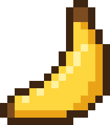

<!doctype html>
<html lang="en">
<head>
<meta charset="utf-8">
<meta name="viewport" content="width=device-width,initial-scale=1,viewport-fit=cover">
<meta name="robots" content="noindex">
<title>Daily Banana Admin</title>
<link rel="icon" href="/favicon.ico" sizes="48x48"><link rel="icon" href="/favicon.svg" type="image/svg+xml"><link rel="icon" href="/favicon-96.png" sizes="96x96" type="image/png"><link rel="apple-touch-icon" href="/apple-touch-icon.png"><link rel="manifest" href="/site.webmanifest">
<link rel="stylesheet" href="https://fonts.googleapis.com/css2?family=Space+Grotesk:wght@400;500;700&display=swap">
<script>(function(){var t;try{t=JSON.parse(localStorage.getItem('snug:theme'))}catch(e){}if(t!=='light'&&t!=='dark')t=matchMedia('(prefers-color-scheme: dark)').matches?'dark':'light';document.documentElement.dataset.theme=t})();</script>
<style>
:root,:root[data-theme="light"]{--bg:#FFF0A0;--ink:#3B2412;--mut:#6B4F30;--card:#FFFAE0;--line:#E6D38A;--acc:#FFD43B;--acc-ink:#3B2412;--accsh:#B97E00;--bar:#B97E00;color-scheme:light}
:root[data-theme="dark"]{--bg:#2A1A0E;--ink:#FFF3C9;--mut:#CDB68C;--card:#382415;--line:#4E3622;--acc:#FFD43B;--acc-ink:#2A1A0E;--accsh:#FFD43B;--bar:#FFD43B;color-scheme:dark}
*{box-sizing:border-box}
body{margin:0;background:var(--bg);color:var(--ink);font-family:'Space Grotesk',system-ui,sans-serif;font-size:15px}
a{color:var(--ink)}
.top{border-bottom:2px solid var(--ink)}
.wrapx{max-width:1120px;margin:0 auto;padding:14px 20px}
.top .wrapx{display:flex;align-items:center;gap:14px}
.navr{display:flex;gap:8px}
.sqa{height:40px;min-width:40px;border:2px solid var(--ink);background:var(--bg);display:flex;align-items:center;justify-content:center;padding:0 12px;font-weight:700;font-size:14px;text-decoration:none;color:var(--ink)}
.sqa.icon{padding:0;width:40px}
.logo{display:flex;align-items:center;gap:8px;font-weight:700;font-size:19px;text-decoration:none;flex:none}
.logo .t{white-space:nowrap}
@media (max-width:440px){.logo .t{display:none}.top .wrapx{gap:10px}}
.logo .m{display:inline-flex;width:30px;height:30px;border:2px solid var(--ink);box-shadow:2px 2px 0 var(--ink);align-items:center;justify-content:center;background:var(--card);flex:none}
.chipa{flex:none}
.abt td,.abt th{white-space:normal}.abt td:first-child{width:44%}
.adin{width:100%;box-sizing:border-box;height:40px;border:2px solid var(--ink);background:var(--bg);color:var(--ink);font:inherit;padding:0 8px;margin-top:4px}
.linkb{all:unset;cursor:pointer;text-decoration:underline;font-size:13px}
.rv{border:2px solid var(--ink);background:var(--bg);padding:12px 14px;margin:0 0 12px}
details.rvb{margin:0 0 10px}
.rv .h{display:flex;flex-wrap:wrap;gap:8px;align-items:center;justify-content:space-between}
.rv .fl{display:flex;flex-wrap:wrap;gap:6px;margin:8px 0}
.rv .fl span{font-size:12px;font-weight:700;padding:2px 7px;border:2px solid var(--ink)}
.rv table{border-collapse:collapse;font-variant-numeric:tabular-nums;font-size:13px;margin:4px 0 8px}
.rv td,.rv th{padding:3px 10px 3px 0;text-align:right}.rv th{font-weight:600;color:var(--mut,inherit);text-align:left}
.rv .act{display:flex;gap:8px;flex-wrap:wrap}
.rv .act button{font:inherit;font-weight:700;font-size:13px;height:34px;padding:0 12px;border:2px solid var(--ink);background:var(--bg);color:var(--ink);cursor:pointer}
.rv .act button.on{background:var(--ink);color:var(--bg)}
.chipa{font-size:11px;letter-spacing:1px;padding:1px 6px;border:2px solid var(--ink);font-weight:700}
.range{display:flex;gap:6px;flex-wrap:wrap;align-items:center}
.range button{font:inherit;font-weight:700;font-size:13px;height:34px;padding:0 11px;background:var(--bg);color:var(--ink);border:2px solid var(--ink);cursor:pointer}
.range button.on{background:var(--ink);color:var(--bg);box-shadow:3px 3px 0 var(--accsh)}
.range input{font:inherit;font-size:13px;height:34px;border:2px solid var(--ink);background:var(--card);color:var(--ink);padding:0 6px}
main.wrapx{padding-top:22px;padding-bottom:60px;display:flex;flex-direction:column;gap:12px}
.head{display:flex;justify-content:space-between;align-items:baseline;gap:12px;flex-wrap:wrap}
h1{margin:0;font-size:30px;letter-spacing:-1px}
h2{font-weight:500;font-size:12px;letter-spacing:1.5px;text-transform:uppercase;color:var(--mut);margin:20px 0 0}
.mut{color:var(--mut)} .small{font-size:13px}
.grid{display:grid;grid-template-columns:repeat(4,minmax(0,1fr));gap:12px}
.grid.g3{grid-template-columns:repeat(3,minmax(0,1fr))}
.grid.g5{grid-template-columns:repeat(5,minmax(0,1fr))}
.grid.g6{grid-template-columns:repeat(6,minmax(0,1fr))}
.card{border:2px solid var(--ink);background:var(--card);padding:12px 14px;display:flex;flex-direction:column;gap:3px;min-width:0}
.card.big{box-shadow:4px 4px 0 var(--accsh);padding:14px 16px}
.card .l{font-size:13px;color:var(--mut)}
button.card{font:inherit;color:inherit;text-align:left;cursor:pointer;width:100%}
button.card:hover .qi,button.card:focus-visible .qi,button.card[aria-expanded="true"] .qi{opacity:1}
.qi{display:inline-flex;align-items:center;justify-content:center;width:15px;height:15px;border:1.5px solid var(--mut);border-radius:50%;font-size:10px;font-weight:700;opacity:.55;vertical-align:1px;margin-left:2px}
.pop{position:absolute;z-index:20;max-width:300px;background:var(--ink);color:var(--bg);padding:10px 12px;font-size:13px;line-height:1.45;box-shadow:4px 4px 0 var(--accsh)}
.pop b{display:block;font-size:14px;margin-bottom:3px}
.chart .l{cursor:pointer}
.card b{font-size:28px;line-height:1.1;font-variant-numeric:tabular-nums;letter-spacing:-.5px}
.card.big b{font-size:36px}
.card .s{font-size:12px;color:var(--mut);font-variant-numeric:tabular-nums}
.card .meter{position:relative;display:block;height:8px;border:2px solid var(--ink);background:var(--bg);margin-top:8px}
.card .meter .f{position:absolute;left:0;top:0;bottom:0;background:var(--ink)}
.card .meter .k{position:absolute;top:-6px;bottom:-6px;width:2px;margin-left:-1px;background:var(--accsh)}
.card .mk{display:flex;justify-content:space-between;gap:8px;font-size:11px;color:var(--mut);margin-top:4px;font-variant-numeric:tabular-nums}
.card .s.up{color:var(--ink);font-weight:700}
.chart{border:2px solid var(--ink);background:var(--card);padding:14px 16px 10px;position:relative}
.chart .bars{display:flex;align-items:flex-end;gap:2px;height:120px;margin-top:10px;border-bottom:2px solid var(--ink)}
.chart .bars span{flex:1;min-width:2px;background:var(--bar);border-radius:3px 3px 0 0;position:relative;outline:none}
.chart .bars span:hover,.chart .bars span:focus{background:var(--ink)}
.chart .x{display:flex;justify-content:space-between;font-size:12px;color:var(--mut);margin-top:4px}
.tip{position:absolute;pointer-events:none;background:var(--ink);color:var(--bg);font-size:12px;padding:4px 8px;white-space:nowrap;transform:translate(-50%,-100%);display:none}
.tip b{font-size:14px}
.table.srcs{border:2px solid var(--ink);background:var(--card)}
.grid2{display:grid;grid-template-columns:repeat(2,minmax(0,1fr));gap:12px}
@media (max-width:640px){.grid2{grid-template-columns:1fr}}
.qb{border:1.5px solid var(--mut);background:none;color:var(--mut);cursor:pointer;font-family:inherit;padding:0;vertical-align:3px}
details.table{border:2px solid var(--ink);background:var(--card)}
details.table summary{cursor:pointer;padding:10px 14px;font-weight:700}
.wrap{overflow-x:auto;position:relative}
.sr{position:absolute;left:0;top:0;width:1px;height:1px;overflow:hidden;clip:rect(0 0 0 0);white-space:nowrap}
table{width:100%;border-collapse:collapse;font-variant-numeric:tabular-nums;font-size:14px}
th,td{text-align:right;padding:7px 10px;border-top:1px solid var(--line);white-space:nowrap}
th{font-size:12px;color:var(--mut);font-weight:500;border-top:2px solid var(--ink)}
th:first-child,td:first-child{text-align:left}
.notes{font-size:12px;color:var(--mut);line-height:1.5;display:flex;flex-direction:column;gap:2px;margin-top:8px}
.msg{border:2px solid var(--ink);box-shadow:3px 3px 0 var(--accsh);padding:10px 12px;background:var(--card)}
.gate{max-width:420px;margin:80px auto;padding:0 16px;display:flex;flex-direction:column;gap:12px}
@media (max-width:1000px){.grid,.grid.g5,.grid.g6{grid-template-columns:repeat(3,minmax(0,1fr))}}
@media (max-width:640px){.grid,.grid.g3,.grid.g5,.grid.g6{grid-template-columns:repeat(2,minmax(0,1fr))}.card.big b{font-size:30px}h1{font-size:26px}}
</style>
</head>
<body>
<div id="m"></div>
<script>
// Daily Banana admin dashboard. Opens for the account set as ADMIN_EMAIL (Google) or ADMIN_DISCORD_ID (Discord) in Netlify,
// using the sign-in from the game's Menu. Numbers come from /.netlify/functions/admin?from=&to= (Eastern days).
const API=(window.MATRYO_CONFIG&&window.MATRYO_CONFIG.api)||'/.netlify/functions';
const m=document.getElementById('m');
const esc=s=>String(s??'').replace(/[&<>"]/g,c=>({'&':'&amp;','<':'&lt;','>':'&gt;','"':'&quot;'}[c]));
const n=v=>v==null?'–':Number(v).toLocaleString('en-US');
const p=v=>v==null?'–':`${v}%`;
const fmtDay=d=>{const [y,mo,dd]=d.split('-');return['Jan','Feb','Mar','Apr','May','Jun','Jul','Aug','Sep','Oct','Nov','Dec'][+mo-1]+' '+(+dd)};
const add=(iso,k)=>{const d=new Date(iso+'T12:00:00Z');d.setUTCDate(d.getUTCDate()+k);return d.toISOString().slice(0,10)};
const todayET=()=>new Intl.DateTimeFormat('en-CA',{timeZone:'America/New_York',year:'numeric',month:'2-digit',day:'2-digit'}).format(new Date());
let TOKEN='';try{TOKEN=(JSON.parse(localStorage.getItem('snug:session')||'null')||{}).token||''}catch(_){}
let RANGE='30',CUSTOM={from:'',to:''};try{RANGE=localStorage.getItem('db-admin-range')||'30'}catch(_){}
if(RANGE==='90')RANGE='30';
const logo='<a class="logo" href="./"><span class="m" aria-hidden="true"></span><span class="t">dailybanana</span></a><span class="chipa">ADMIN</span>';

function gate(msg){
  m.innerHTML=`<div class="gate"><div style="display:flex;gap:8px;align-items:center">${logo}</div>${msg?`<div class="msg">${esc(msg)}</div>`:''}
    <div class="small mut">Sign in on the game's Menu with your admin account (Google or Discord), then come back here.</div>
    <a href="./" style="font-weight:700">Go to the game →</a></div>`;
}
function rangeDates(R=RANGE){
  const t=todayET();
  if(R==='custom'&&CUSTOM.from&&CUSTOM.to)return{from:CUSTOM.from,to:CUSTOM.to};
  if(R==='1')return{from:t,to:t};
  if(R==='all')return{from:'2026-11-03',to:t};
  return{from:add(t,-(+R||30)+1),to:t};
}
// Standard dashboard caching: numbers for each range are kept on this device for 30 minutes and shown instantly.
// The server is only asked when they're older than that, when you tap Refresh, or for a custom date range.
const FRESH_MS=30*60e3,ADM=new Map();let LAST='',PRE=false;
const cacheGet=key=>{if(ADM.has(key))return ADM.get(key);try{const v=JSON.parse(localStorage.getItem('db-adm:'+key)||'null');if(v&&v.d)ADM.set(key,v);return v}catch(_){return null}};
const cachePut=(key,d)=>{const v={at:Date.now(),d};ADM.set(key,v);
  try{localStorage.setItem('db-adm:'+key,JSON.stringify(v))}catch(_){   // full: drop older ranges and try again
    try{Object.keys(localStorage).filter(k=>k.startsWith('db-adm:')&&k!=='db-adm:'+key).forEach(k=>localStorage.removeItem(k));localStorage.setItem('db-adm:'+key,JSON.stringify(v))}catch(_){}}};
const fresh=v=>v&&Date.now()-v.at<FRESH_MS;
async function load(force=false){
  if(!TOKEN)return gate();
  const {from,to}=rangeDates(),key=from+'_'+to,seen=cacheGet(key);
  if(seen)draw(seen.d,seen.at);
  else if(!m.querySelector('main'))m.innerHTML='<main class="wrapx"><div class="mut">Loading…</div></main>';
  LAST=key;
  if(seen&&fresh(seen)&&!force&&RANGE!=='custom'){prefetch();return}   // fresh enough: no server call
  setBusy(true);
  const d=await fetchRange(from,to);
  if(LAST!==key)return;   // a different range was picked meanwhile
  setBusy(false);
  if(d&&d.unauth)return gate('This account isn\'t the admin. Sign in with your admin Google or Discord account on the game\'s Menu.');
  if(!d)return seen?null:m.innerHTML='<main class="wrapx"><div class="msg">Could not reach the server.</div></main>';
  if(!d.health)return seen?null:m.innerHTML='<main class="wrapx"><div class="msg">Server error.</div></main>';
  draw(d,Date.now());prefetch();
}
function setBusy(on){const b=document.getElementById('refresh');if(b){b.disabled=on;b.textContent=on?'Updating…':'Refresh'}}
// once the range on screen is ready, quietly fill in the other preset ranges that are out of date, one at a time
async function prefetch(){if(PRE)return;PRE=true;
  for(const R of ['1','7','30','all']){const {from,to}=rangeDates(R);if(fresh(cacheGet(from+'_'+to)))continue;await fetchRange(from,to)}
  PRE=false}
let META_NOW=false;
function adminToast(msg){let t=document.getElementById('atoast');if(!t){t=document.createElement('div');t.id='atoast';t.setAttribute('role','status');
  t.style.cssText='position:fixed;left:50%;bottom:22px;transform:translateX(-50%);background:var(--ink);color:var(--bg);padding:10px 16px;font-weight:700;font-size:14px;z-index:50;box-shadow:3px 3px 0 var(--accsh);max-width:calc(100vw - 32px)';document.body.appendChild(t)}
  t.textContent=msg;t.style.display='block';clearTimeout(t._h);t._h=setTimeout(()=>t.style.display='none',2200)}
async function fetchRange(from,to){const key=from+'_'+to,mq=META_NOW?'&meta=1':'';META_NOW=false;
  const r=await fetch(`${API}/admin?from=${from}&to=${to}${mq}`,{headers:{authorization:'Bearer '+TOKEN}}).catch(()=>null);
  if(!r)return null;if(r.status===401)return{unauth:true};
  const d=await r.json().catch(()=>null);
  if(d&&d.health)cachePut(key,d);
  return d}
const ago=t=>{const mi=Math.round((Date.now()-t)/60e3);return mi<1?'just now':mi<60?`${mi} min ago`:`${Math.round(mi/60)} h ago`};
// a change vs the previous period: arrow + number, never color alone
const DEF={
  'Weekend hints test':'This weekend\'s challenge showed a size hint under each question until the morning of Nov 7, then they were turned off. Players before that saw hints; players after didn\'t. A gap in average score shows how much the hints helped. A few people on an old copy of the app may still see hints for a short while.',
  'Results scroll depth':'Of the results screens people looked at in this range (for more than a second or two), the share where each part came at least halfway into view. Tracked from Nov 7. On version B the Copy / Share buttons sit near the top, so more people see them.',
  'A/B test':'Each device is put in A or B at random and keeps it. The main number is the share of devices that saw a results screen and then copied or shared at least once, so B opening on the results more often doesn\'t inflate it. Taps per 100 views are in the table. The verdict uses a standard two-proportion test: 95% sure is the usual bar for calling a winner, and it waits for about 100 viewers on each side.',
  'Ad spend':'For each ad you add: the new devices whose first visit came from a source containing your text (see Where players come from) on the ad\'s days, and what each one cost: the amount divided by that count. Played = finished any game. Came back = visited or played again on a later day. A device counts once, for the source of its very first visit. These use the ad\'s own dates, not the range picked at the top. Meta campaigns appear on their own with their spend from Meta (updated every 3 hours, or when you tap Refresh). Their visitors are matched by the text in the box. \u201cmeta\u201d (the default) counts every visitor who came from a Meta ad: Facebook or Instagram ad clicks (tagged or not, carousel cards included), Meta\u2019s own tags (fb, ig, msg, an) and facebook.com or instagram.com links. Posts you tag as organic (medium social, bio, organic) are left out. Type other text to match only sources that contain it.',
  'Games to review':'Games with 3 or more exact answers, or under 30 seconds of answering in total, are left out of score stats automatically. Unusual games that aren\'t clear-cut (a near-perfect score, 85+ on every round, or the same game sent twice) wait in the Inbox and keep counting unless you leave them out. Left out means the game no longer counts toward averages, rankings, the archive or posts. The player keeps their own result.',
  'Daily active players':'Unique players (devices) who finished at least one game, daily or quick play, on the last day of the range. Compared with the day before.',
  'Weekly active players':'Unique players who finished at least one game in the 7 days ending on the last day of the range. Compared with the 7 days before that.',
  'Monthly active players':'Unique players who finished at least one game in the 30 days ending on the last day of the range. Compared with the 30 days before that.',
  'New players':'Players whose first finished game ever falls inside the range. Compared with the same number of days just before it. Visiting without playing doesn\'t count.',
  'Players per day':'Unique players who finished at least one game on each day of the range. Hover or tap a bar for the exact number.',
  'D1 retention':'Of the new players in this range, the share who finished a game again exactly 1 day after their first game. Only counts players whose next day has already happened. The bar marks published targets for mobile games (GameAnalytics 2026): 30% puts a game in the top 25%, 40% in the top 10%. They come from installed apps, so treat them as a rough yardstick.',
  'D7 retention':'Of the new players in this range, the share who finished a game again exactly 7 days after their first game. Only counts players at least 7 days in. The bar marks published targets for mobile games (GameAnalytics 2026): 6% puts a game in the top 25%, 11% in the top 10%. The typical game is just under 4%.',
  'D30 retention':'Of the new players in this range, the share who finished a game again exactly 30 days after their first game. Only counts players at least 30 days in. The bar marks a published target for mobile games (GameAnalytics 2026): 1.6% puts a game in the top 25%. The typical game is under 1%.',
  'Starts':'Players who started a daily in the range, counted once per player per daily. Tracked from Nov 4, so a range that includes Nov 3 will show more completions than starts: compare starts with the \u201csince Nov 4\u201d number under Completions. Players still on an older copy of the game (an app saved to the home screen that hasn\u2019t refreshed) don\u2019t send starts yet.',
  'Completions':'Dailies finished in the range, counted once per player per daily even if their score was sent twice.',
  'Completion rate':'Of the dailies started in the range, the share that were finished. It only counts finishes that have a matching start, so it can be under 100% even when Completions equals Starts: a few finishes come from games started before start tracking or on an older copy of the game, and a few starts were never finished. There\'s no published benchmark for daily web games, so the mark on the bar is your own average over the 30 days ending on the range\'s last day.',
  'Avg accuracy':'Average daily score as a percent of the 600 possible. Each round scores your accuracy: the smaller of guess and answer divided by the bigger.',
  'Avg time guessing':'Average time spent on the six rounds of a daily, from each question appearing to the guess (25 seconds max per round). Reading the reveals isn\'t counted. Tracked from Nov 4.',
  'Games started':'Quick play games started in the range, including challenge games. Tracked from Nov 4, so compare it with the \u201csince Nov 4\u201d number under Games finished. Players on an older copy of the game don\u2019t send starts yet.',
  'Games finished':'Quick play games finished in the range, including challenge games.',
  'Unique players':'Players who finished at least one quick play game in the range.',
  'Finish rate':'Quick play games finished ÷ quick play games started, for days with start tracking.',
  'Challenges made':'Challenge links created in the range.',
  'Challenge joins':'Times someone other than the creator played a challenge in the range.',
  'Bananas earned':'Rounds scored 90 or more (within about 10% of the answer), across dailies and quick play in the range.',
  'Players with a banana':'Players who earned at least one banana in the range.',
  'Avg bananas per player':'Bananas earned in the range ÷ players who finished a game in the range.',
  'Golden bananas':'Rounds guessed exactly (scored 100), in dailies and quick play in the range. The daily ones are what earn the Golden banana badge.',
  'Players with a golden banana':'Players who guessed at least one round exactly in the range.',
  'Banana rate':'Bananas earned ÷ all rounds played in the range.',
  'Unique visitors':'Devices that opened the game in the range, whether or not they played.',
  'Returning visitors':'Visitors in the range whose first visit was on an earlier day.',
  'Visitor → player':'Of the visitors in the range, the share who finished at least one game.',
  'Results copied':'Times players copied or shared their results in the range.',
  'Challenge links copied':'Times players copied or shared a challenge link in the range.',
  'Where players come from':'Every new device in the range, grouped by where its first visit came from: ad tags in the link (like the Meta ad: source · campaign), a Facebook click without tags, another website, or direct. Played = finished any game. Came back = visited or played again on a later day. Signed in and new accounts are counted on that device. Tracked from Nov 4, so older devices show as \u201cbefore tracking\u201d.',
  'New accounts':'Accounts created in the range with Google or Discord sign-in.',
  'Avg time in the game':'Average time a player spent actively in the game per day (only while the page was showing and they had touched it in the last 2 minutes). One player on one day counts once. Tracked from Nov 6.',
  'Median time':'The middle value of time in the game per player per day: half spent less, half spent more. Less thrown off by a few very long sessions than the average.',
  'Just the daily':'Share of player-days where the player did the daily and nothing else (no quick play, no Menu, no challenges).',
  'Daily and more':'Share of player-days where the player did the daily and also looked around: quick play, the Menu (stats, badges, history) or a challenge.',
  'Came back the same day':'Share of player-days with two or more separate visits (the game was opened again later that day).',
  'Visits per day':'Average number of separate visits per player per day.',
  'Average rating':'The average of every rating players have given, 1 to 5 bananas. Players are asked once, after their 3rd finished daily.',
  'Ratings':'How many players have rated the game.',
  'Said not now':'Players who closed the rating popup without rating. They are not asked again.',
  'Installed app':'Visitors in the range who opened Daily Banana as an installed app rather than in a browser tab.',
  'When people play the daily':'Dailies finished in each hour of the day, in each player\u2019s own local time. Tracked from Nov 6.',
  'Countries':'Each visitor\u2019s country, from Netlify\u2019s servers (no IP address or location is saved). Players = visitors who finished a game in the range. Tracked from Nov 6.',
  'Time zones':'The time zone set on each visitor\u2019s device, which shows the region within a country. Tracked from Nov 6.',
  'Devices':'Phone, tablet or computer, from the browser. Tracked from Nov 6.',
  'Languages':'The language each visitor\u2019s browser is set to. Tracked from Nov 6.',
};
const pc=(a,b)=>b?`${Math.round(100*a/b)}%`:'';
const ch=c=>c==null?'<span class="s up">new</span>':`<span class="s ${c>0?'up':''}">${c>0?'▲':c<0?'▼':'•'} ${Math.abs(c)}% vs previous</span>`;
const card=(label,val,sub='',big=false,extra='')=>`<button class="card ${big?'big':''}" data-def="${esc(label)}" aria-expanded="false"><span class="l">${label} <span class="qi" aria-hidden="true">?</span></span><b>${val}</b>${sub?`<span class="s">${sub}</span>`:''}${extra}</button>`;
// a bar under a number, with marks for the targets (or your own 30-day normal). max = the bar's full width.
const meter=(v,max,marks,caption)=>{const w=x=>Math.max(0,Math.min(100,100*x/max)).toFixed(1);
  return`<span class="meter" aria-hidden="true">${v==null?'':`<span class="f" style="width:${w(v)}%"></span>`}${marks.map(x=>x==null?'':`<span class="k" style="left:${w(x)}%"></span>`).join('')}</span><span class="mk"><span>0</span><span>${caption}</span></span>`};
// published targets: GameAnalytics 2026 benchmarks, all mobile games (good = top 25%, great = top 10%)
const TARGET={d1:{good:30,great:40,max:50},d7:{good:6,great:11,max:15},d30:{good:1.6,great:null,max:4}};
const since=(d,key)=>d.from<d.since[key]?`tracked from ${fmtDay(d.since[key])}`:'';

// ---------- where players are, and how they play (tracked from Nov 6) ----------
const CN=(()=>{try{return new Intl.DisplayNames(['en'],{type:'region'})}catch(_){return null}})(),LN=(()=>{try{return new Intl.DisplayNames(['en'],{type:'language'})}catch(_){return null}})();
const nameOf=(t,k)=>{try{return(t==='c'?CN&&CN.of(k):t==='l'?LN&&LN.of(k):null)||k}catch(_){return k}};
const mmss=v=>v==null?'–':`${Math.floor(v/60)}:${String(v%60).padStart(2,'0')}`;
// long lists show their top 10; "Show all" opens the rest (remembered while the page is open)
const XOPEN=new Set();
const moreRows=(id,rows,row)=>rows.map((r,i)=>i<10?row(r):row(r).replace('<tr','<tr data-x="'+id+'"'+(XOPEN.has(id)?'':' hidden'))).join('');
const moreBtn=(id,len)=>len>10?`<button class="linkb xbtn" data-xb="${id}" type="button" style="display:block;margin:8px 14px 10px">${XOPEN.has(id)?'Show top 10':`Show all ${len}`}</button>`:'';
function miniTable(title,rows,label){
  return`<div class="table srcs"><div class="wrap"><table><thead><tr><th><button class="qi qb" data-def="${title}" aria-expanded="false" aria-label="What this means">?</button> ${title}</th><th>Visitors</th><th>Players</th></tr></thead>
    <tbody>${rows.length?moreRows(title,rows,r=>`<tr><td>${esc(label(r.key))}</td><td>${n(r.visitors)}</td><td>${n(r.players)} <span class="mut">${pc(r.players,r.visitors)}</span></td></tr>`):'<tr><td class="mut">No data yet</td><td></td><td></td></tr>'}</tbody></table></div>${moreBtn(title,rows.length)}</div>`}
function hintsHtml(d){const H=d.ab&&d.ab.hints;if(!H)return'';
  return`<div class="table srcs" style="margin-bottom:12px"><div class="wrap"><table class="abt"><thead><tr><th style="text-align:left">Weekend challenge: size hints <button class="qi qb" data-def="Weekend hints test" aria-expanded="false" aria-label="What this means">?</button></th><th>With hints</th><th>Without</th></tr></thead><tbody>
    <tr><td style="text-align:left">Players</td><td>${n(H.with.players)}</td><td>${n(H.without.players)}</td></tr>
    <tr><td style="text-align:left">Average score</td><td>${H.with.avg==null?'–':n(H.with.avg)}</td><td>${H.without.avg==null?'–':n(H.without.avg)}</td></tr></tbody></table></div></div>`}
function depthHtml(d){const D=d.depth;if(!D)return'';const r=(lab,k)=>`<tr><td style="text-align:left">${lab}</td><td>${p(D.all[k])}</td><td>${p(D.A[k])}</td><td>${p(D.B[k])}</td></tr>`;
  return`<div class="table srcs" style="margin-bottom:12px"><div class="wrap"><table class="abt"><thead><tr><th style="text-align:left">How far people scroll on results <button class="qi qb" data-def="Results scroll depth" aria-expanded="false" aria-label="What this means">?</button></th><th>All</th><th>A</th><th>B</th></tr></thead><tbody>
    ${r('Saw Copy / Share','share')}${r('Saw their last round','rounds')}${r('Saw the fun fact','fact')}${r('Reached the bottom','bottom')}
    <tr><td style="text-align:left" class="mut small">Results views</td><td class="mut small">${n(D.all.views)}</td><td class="mut small">${n(D.A.views)}</td><td class="mut small">${n(D.B.views)}</td></tr></tbody></table></div></div>`}
function abHtml(d){const X=d.ab;if(!X)return'';const A=X.A,B=X.B,ends=new Date(X.ends),live=Date.now()<ends;
  const per=(s,k)=>s.views&&k!=='views'?`${(Math.round(1000*s[k]/s.views)/10)}/100 views`:'';
  const row=(lab,k)=>`<tr><td style="text-align:left">${lab}</td><td>${n(A[k])}<br><span class="mut small">${per(A,k)}</span></td><td>${n(B[k])}<br><span class="mut small">${per(B,k)}</span></td></tr>`;
  const enough=A.viewers>=100&&B.viewers>=100,lead=A.rate!=null&&B.rate!=null?(B.rate>A.rate?'B':A.rate>B.rate?'A':null):null;
  const verdict=!A.viewers||!B.viewers?'Waiting for results views on both versions.'
    :!enough?`Not enough data yet: each version needs about 100 viewers before the gap means much (A has ${n(A.viewers)}, B has ${n(B.viewers)}).`
    :!lead?'A and B are even so far.'
    :X.confidence>=95?`<b>${lead} is the likely winner</b>: ${X.confidence>99?'over 99':X.confidence}% sure the gap isn’t luck.`
    :`${lead} is ahead, but only ${X.confidence}% sure the gap isn’t luck. 95% is the usual bar to call it.`;
  return`<h2>A/B test · results layout <button class="qi qb" data-def="A/B test" aria-expanded="false" aria-label="What this means">?</button></h2>
  <p class="small mut" style="margin:-4px 0 10px">${live?`Running until ${ends.toLocaleDateString('en-US',{weekday:'short',month:'short',day:'numeric'})} (midnight Eastern)`:'Finished'} · A = sharing below your rounds · B = sharing above, opens on results after the daily</p>
  <div class="grid g3">${card('Viewers who copied or shared · A',A.rate==null?'–':A.rate+'%',`${n(A.sharers)} of ${n(A.viewers)} viewers`)}${card('Viewers who copied or shared · B',B.rate==null?'–':B.rate+'%',`${n(B.sharers)} of ${n(B.viewers)} viewers`)}${card('Verdict',lead&&enough?lead:'–','')}</div>
  <p class="small" style="margin:8px 0 12px">${verdict}</p>
  ${hintsHtml(d)}
  ${depthHtml(d)}
  <div class="table srcs"><div class="wrap"><table class="abt"><thead><tr><th style="text-align:left">All results screens</th><th>A</th><th>B</th></tr></thead><tbody>
    ${row('Results views','views')}${row('Copy results','copy')}${row('Share image','share')}${row('Play again','again')}${row('Try the weekend challenge','weekend')}${row('Buy me a banana','kofi')}
    <tr><td style="text-align:left">Viewers who played again</td><td>${n(A.again_devs)} <span class="mut">${pc(A.again_devs,A.viewers)}</span></td><td>${n(B.again_devs)} <span class="mut">${pc(B.again_devs,B.viewers)}</span></td></tr>
  </tbody></table></div></div>`}
function adsHtml(d){const A=d.ads||[],MT=d.meta||{},$=v=>v==null?'–':'$'+(v<10?v.toFixed(2):v<100?v.toFixed(2):Math.round(v).toLocaleString('en-US'));
  const per=(a,k)=>a[k]?$(a.amount/a[k])+' each':'';
  const srcs=[...new Set((d.sources||[]).map(x=>x.source).filter(x=>x!=='direct'&&x!=='before tracking'))];
  const metaLine=!MT.connected?'Meta ads: not connected. Add META_ADS_TOKEN in Netlify to pull spend automatically.'
    :MT.error?`Meta ads: couldn’t update (${esc(MT.error)}). Showing the last numbers.`:`Meta ads: connected · spend from Meta, updated ${MT.at?ago(MT.at):'–'}`;
  return`<h2>Ad spend <button class="qi qb" data-def="Ad spend" aria-expanded="false" aria-label="What this means">?</button></h2>
  <p class="small mut" style="margin:-4px 0 10px">${metaLine}</p>
  ${A.length?`<div class="table srcs"><div class="wrap"><table><thead><tr><th>Ad</th><th>Spent</th><th>New visitors</th><th>Played</th><th>Finished a daily</th><th>Came back</th><th><span class="sr">Remove</span></th></tr></thead><tbody>
    ${A.map((a,i)=>`<tr><td style="text-align:left"><b>${esc(a.name)}</b><br><span class="mut small">${a.meta?`Meta · ${a.running?'running':esc(String(a.status||'').toLowerCase())} · since ${fmtDay(a.from)}<br>${n(a.impressions)} impressions · ${n(a.clicks)} clicks`:`${fmtDay(a.from)}–${fmtDay(a.to)}${a.running?' · running':''}`}<br>source has ${a.meta?`<input class="adin mm" data-mid="${esc(a.id)}" value="${esc(a.match)}" aria-label="Source text for ${esc(a.name)}" style="width:140px;height:28px;margin:2px 0 0;display:inline-block">`:`“${esc(a.match)}”`}</span></td><td>$${a.amount.toFixed(2)}</td>
      <td>${n(a.visitors)}<br><span class="mut small">${per(a,'visitors')}</span></td><td>${n(a.played)}<br><span class="mut small">${per(a,'played')}</span></td>
      <td>${n(a.daily)}<br><span class="mut small">${per(a,'daily')}</span></td><td>${n(a.came_back)}<br><span class="mut small">${per(a,'came_back')}</span></td>
      <td>${a.meta?'':`<button class="linkb" data-adel="${i}" type="button">Remove</button>`}</td></tr>`).join('')}</tbody></table></div></div>`:'<p class="mut small">No ads added yet.</p>'}
  <details class="table" style="margin-top:10px" ${A.length?'':'open'}><summary>Add an ad</summary>
    <form id="adform" style="display:grid;gap:10px;padding:0 14px 14px;grid-template-columns:repeat(auto-fit,minmax(150px,1fr));align-items:end">
      <label class="small">Name<br><input name="name" required maxlength="60" placeholder="Dailydle listing" class="adin"></label>
      <label class="small">Source contains<br><input name="match" required maxlength="60" list="adsrc" placeholder="dailydle" class="adin"><datalist id="adsrc">${srcs.map(x=>`<option value="${esc(x)}">`).join('')}</datalist></label>
      <label class="small">Amount ($)<br><input name="amount" required type="number" min="0" step="0.01" placeholder="138.90" class="adin"></label>
      <label class="small">First day<br><input name="from" required type="date" class="adin"></label>
      <label class="small">Last day<br><input name="to" required type="date" class="adin"></label>
      <button class="sqa" type="submit" style="height:40px">Save</button>
    </form></details>`}
function reviewHtml(d){const L=d.review||[];
  const meta=r=>[r.secs!=null?`${r.secs}s answering`:null,r.h!=null?`finished ${((r.h+11)%12)+1}${r.h<12?'am':'pm'} their time`:null,
    [r.cc,r.tz].filter(Boolean).join(' · ')||null,r.first?`first seen ${fmtDay(r.first)}`:null,r.others?`usual daily ${r.others.avg} over ${r.others.n}`:'first daily',`device ${r.device}`].filter(Boolean).join(' · ');
  const card=r=>`<div class="rv">
    <div class="h"><b>Daily #${String(r.n).padStart(3,'0')} · ${fmtDay(r.day)} · ${r.score}/600</b><span class="small mut">${r.s==='out'?'You left it out':r.s==='ok'?'You counted it':r.auto?'Left out automatically':'Waiting for you'}</span></div>
    <div class="fl">${r.flags.map(f=>`<span>${esc(f)}</span>`).join('')}</div>
    <div style="overflow-x:auto"><table><tr><th>Round</th>${r.points.map((_,i)=>`<td>${i+1}</td>`).join('')}</tr>
      <tr><th>Guess</th>${r.points.map((_,i)=>`<td>${r.guesses[i]==null?'–':n(r.guesses[i])}</td>`).join('')}</tr>
      ${r.answers?`<tr><th>Answer</th>${r.answers.map(a=>`<td>${n(a)}</td>`).join('')}</tr>`:''}
      <tr><th>Points</th>${r.points.map(x=>`<td>${x}</td>`).join('')}</tr></table></div>
    <div class="small mut" style="margin-bottom:10px">${esc(meta(r))}</div>
    <div class="act" data-key="${esc(r.key)}">${r.box==='inbox'?'<button data-s="out">Leave out of stats</button><button data-s="ok">Looks fine</button>'
      :r.box==='auto'?'<button data-s="ok">Count it anyway</button>':'<button data-s="">Undo</button>'}</div>
  </div>`;
  const box=(id,title,items,empty)=>`<details class="table rvb" data-box="${id}" ${RVOPEN.has(id)?'open':''}><summary>${title} (${items.length})</summary><div style="padding:0 14px 4px">${items.length?items.map(card).join(''):`<p class="small mut">${empty}</p>`}</div></details>`;
  const inbox=L.filter(r=>r.box==='inbox'),auto=L.filter(r=>r.box==='auto'),done=L.filter(r=>r.box==='done');
  return`<h2>Games to review <button class="qi qb" data-def="Games to review" aria-expanded="false" aria-label="What this means">?</button></h2>
  <p class="small mut" style="margin:-4px 0 12px">${auto.length} left out automatically · <b>${inbox.length} waiting for you</b> · ${done.length} you've reviewed</p>
  ${box('inbox','Inbox',inbox,'Nothing waiting. Unusual games land here.')}
  ${box('auto','Left out automatically',auto,'None in this range.')}
  ${box('done','Reviewed',done,'Nothing yet.')}`}
let RVOPEN=new Set();try{RVOPEN=new Set(JSON.parse(sessionStorage.getItem('db-rvopen')||'[]'))}catch(_){}
function feedbackHtml(d){const F=d.feedback||[];
  return`<h2>Feedback</h2>${F.length?`<div class="table srcs"><div class="wrap"><table><thead><tr><th>Message</th><th>From</th><th>Day</th></tr></thead><tbody>${F.map(f=>`<tr><td style="white-space:pre-wrap;text-align:left;min-width:240px">${esc(f.message)}</td><td>${esc(f.name||'anonymous')}</td><td>${fmtDay(f.day)}</td></tr>`).join('')}</tbody></table></div></div>`:'<p class="mut small">No feedback yet. Players send it from Menu → Have feedback?</p>'}`}
function ratingsHtml(d){const R=d.ratings;if(!R)return'';const max=Math.max(1,...R.dist);
  return`<h2>Ratings</h2>
    <div class="grid">${card('Average rating',R.avg==null?'–':`${R.avg} / 5`,'bananas, all time')}${card('Ratings',n(R.count),'all time')}${card('Said not now',n(R.skipped))}</div>
    <div class="table srcs"><div class="wrap"><table><thead><tr><th>Bananas</th><th>Ratings</th><th style="width:55%"></th></tr></thead><tbody>
      ${[5,4,3,2,1].map(k=>`<tr><td>${'🍌'.repeat(k)}</td><td>${n(R.dist[k-1])}</td><td style="text-align:left"><span style="display:inline-block;height:10px;background:var(--bar);width:${Math.round(100*R.dist[k-1]/max)}%"></span></td></tr>`).join('')}
    </tbody></table></div></div>
    ${R.comments.length?`<div class="table srcs"><div class="wrap"><table><thead><tr><th>Latest comments</th><th>Bananas</th><th>Day</th></tr></thead><tbody>${R.comments.map(c=>`<tr><td style="white-space:normal;text-align:left">${esc(c.comment)}</td><td>${c.stars}</td><td>${fmtDay(c.day)}</td></tr>`).join('')}</tbody></table></div></div>`:''}`}
function whereHtml(d){
  const W=d.where;if(!W)return'';
  const T=W.time,max=Math.max(1,...W.hours),hl=h=>h===0?'12a':h<12?`${h}a`:h===12?'12p':`${h-12}p`;
  const note=d.to<d.since.where?'<p class="mut small">Tracked from Nov 6.</p>':'';
  return`<h2>How people play</h2>${note}
    <div class="grid g6">
      ${card('Avg time in the game',T?mmss(T.avg):'–',T?`per player per day · ${n(T.days)} player-days`:'tracked from Nov 6')}${card('Median time',T?mmss(T.median):'–')}
      ${card('Just the daily',p(T&&T.daily_only),'nothing else that day')}${card('Daily and more',p(T&&T.daily_plus),'quick play, Menu or a challenge')}
      ${card('Came back the same day',p(T&&T.came_back),'2+ visits that day')}${card('Visits per day',T?T.visits:'–','per player')}
    </div>
    <div class="chart" id="hchart"><button class="l small mut" data-def="When people play the daily" aria-expanded="false" style="font:inherit;font-size:13px;background:none;border:0;padding:0;color:var(--mut);cursor:pointer">When people play the daily (their local time) <span class="qi" aria-hidden="true">?</span></button>
      <div class="bars">${W.hours.map((v,h)=>`<span tabindex="0" data-v="${v}" data-h="${hl(h)}" style="height:${Math.max(2,(v/max)*100)}%" aria-label="${hl(h)}: ${v} dailies"></span>`).join('')}</div>
      <div class="x"><span>12a</span><span>6a</span><span>12p</span><span>6p</span><span>11p</span></div>
      <div class="tip" id="htip"></div></div>
    <h2>Where players are</h2>
    <div class="grid2">
      ${miniTable('Countries',W.countries,k=>nameOf('c',k))}
      ${miniTable('Time zones',W.timezones,k=>k.replace(/_/g,' '))}
      ${miniTable('Devices',W.devices,k=>k.charAt(0).toUpperCase()+k.slice(1))}
      ${miniTable('Languages',W.languages,k=>nameOf('l',k))}
    </div>
    <div class="grid g6" style="margin-top:12px">${card('Installed app',n(W.installed),'opened as an app')}</div>`}
function draw(d,at=Date.now()){
  const H=d.health,R=d.retention,D=d.daily,Q=d.quick,B=d.bananas,T=d.traffic;
  const label=RANGE==='1'?'Today':RANGE==='all'?'All time':RANGE==='custom'?`${fmtDay(d.from)} – ${fmtDay(d.to)}`:`Last ${RANGE} days`;
  const ret=(k,days)=>{const T=TARGET[k],bar=meter(R[k].v,T.max,[T.good,T.great],`${T.good}% good${T.great?` · ${T.great}% great`:''}`);
    return R[k].v==null?card(`D${days} retention`,'–',`needs ${days} day${days>1?'s':''} of data`,false,bar):card(`D${days} retention`,p(R[k].v),`of ${n(R[k].n)} new player${R[k].n===1?'':'s'}`,false,bar)};
  const N=D.norm||{},mm=x=>x==null?'–':`${Math.floor(x/60)}:${String(x%60).padStart(2,'0')}`;
  const series=[...d.days].reverse().slice(-90),max=Math.max(1,...series.map(x=>x.players));
  m.innerHTML=`<div class="top"><div class="wrapx">${logo}<div style="flex:1"></div>
    <div class="navr"><a class="sqa icon" href="https://www.instagram.com/dailybanana.io/" target="_blank" rel="noopener" aria-label="Daily Banana on Instagram"><svg width="26" height="26" viewBox="0 0 24 24" fill="none" stroke="currentColor" stroke-width="2" aria-hidden="true"><rect x="3" y="3" width="18" height="18" rx="5"/><circle cx="12" cy="12" r="4"/><circle cx="17.5" cy="6.5" r="1" fill="currentColor" stroke="none"/></svg></a><a class="sqa" href="./?menu">Menu</a></div></div></div>
  <main class="wrapx">
    <div class="range" role="group" aria-label="Date range">${[['1','Today'],['7','7D'],['30','30D'],['all','All']].map(([k,l])=>`<button data-r="${k}" class="${RANGE===k?'on':''}">${l}</button>`).join('')}
      <button data-r="custom" class="${RANGE==='custom'?'on':''}">Custom</button>
      ${RANGE==='custom'?`<input type="date" id="cf" value="${d.from}" aria-label="From"><input type="date" id="ct" value="${d.to}" aria-label="To">`:''}</div>
    <div class="head"><h1>Overview</h1><span class="mut small">${label} · ${fmtDay(d.from)}–${fmtDay(d.to)} · updated ${ago(at)}</span><button class="sqa" id="refresh" type="button" style="margin-left:auto;height:34px">Refresh</button></div>

    <h2>Player health</h2>
    <div class="grid">
      ${card('Daily active players',n(H.dau.v),ch(H.dau.ch),true)}${card('Weekly active players',n(H.wau.v),ch(H.wau.ch),true)}
      ${card('Monthly active players',n(H.mau.v),ch(H.mau.ch),true)}${card('New players',n(H.new.v),ch(H.new.ch),true)}
    </div>
    <div class="chart" id="chart"><button class="l small mut" data-def="Players per day" aria-expanded="false" style="font:inherit;font-size:13px;background:none;border:0;padding:0;color:var(--mut);cursor:pointer">Players per day <span class="qi" aria-hidden="true">?</span></button>
      <div class="bars">${series.map(x=>`<span tabindex="0" data-d="${x.day}" data-v="${x.players}" style="height:${Math.max(2,(x.players/max)*100)}%" aria-label="${fmtDay(x.day)}: ${x.players} players"></span>`).join('')}</div>
      <div class="x"><span>${series.length?fmtDay(series[0].day):''}</span><span>max ${n(max)}</span><span>${series.length?fmtDay(series[series.length-1].day):''}</span></div>
      <div class="tip" id="tip"></div></div>

    <h2>Retention</h2>
    <div class="grid g3">${ret('d1',1)}${ret('d7',7)}${ret('d30',30)}</div>

    <h2>The daily</h2>
    <div class="grid g5">
      ${card('Starts',n(D.starts),D.starts==null?'tracked from Nov 4':since(d,'starts'))}${card('Completions',n(D.completions),d.from<d.since.starts&&D.starts!=null?`${n(D.completions_tracked)} since Nov 4`:'')}
      ${card('Completion rate',p(D.rate),D.rate==null?'needs start tracking':D.finished_starts!=null?`${n(D.finished_starts)} of ${n(D.starts)} starts finished`:'',false,meter(D.rate,100,[N.rate],N.rate==null?'':`mark = your 30-day avg ${N.rate}%`))}${card('Avg accuracy',p(D.accuracy),D.avg_score!=null?`avg ${n(D.avg_score)} / 600`:'',false,meter(D.accuracy,100,[N.accuracy],N.accuracy==null?'':`mark = your 30-day avg ${N.accuracy}%`))}
      ${card('Avg time guessing',mm(D.time),D.time==null?'tracked from Nov 4':'all 6 rounds',false,meter(D.time,Math.max(150,(D.time||0)*1.2,(N.time||0)*1.2),[N.time],N.time==null?'':`mark = your 30-day avg ${mm(N.time)}`))}
    </div>

    <h2>Quick play</h2>
    <div class="grid g6">
      ${card('Games started',n(Q.started),Q.started==null?'tracked from Nov 4':'')}${card('Games finished',n(Q.completed),d.from<d.since.starts&&Q.started!=null?`${n(Q.completed_tracked)} since Nov 4`:'')}
      ${card('Unique players',n(Q.players))}${card('Finish rate',p(Q.rate),Q.rate==null?'needs start tracking':'')}
      ${card('Challenges made',n(Q.challenges))}${card('Challenge joins',n(Q.joins),'friends who played one')}
    </div>

    <h2>Bananas</h2>
    <div class="grid g6">
      ${card('Bananas earned',n(B.total),'rounds scored 90+')}${card('Players with a banana',n(B.players))}
      ${card('Avg bananas per player',B.per_player??'–')}${card('Banana rate',p(B.rate),'of all rounds played')}
      ${card('Golden bananas',n(B.golden),B.golden_daily!=null?`${n(B.golden_daily)} in dailies`:'')}${card('Players with a golden banana',n(B.golden_players))}
    </div>

    <h2>Traffic &amp; sharing</h2>
    <div class="grid g6">
      ${card('Unique visitors',n(T.visitors))}${card('Returning visitors',n(T.returning),'visited on an earlier day')}
      ${card('Visitor → player',p(T.conversion),'finished a game')}${card('Results copied',n(T.share_results))}
      ${card('Challenge links copied',n(T.share_challenge))}${card('Buy me a banana taps',n(T.kofi),'tracked from Nov 4')}${card('New accounts',n(T.accounts))}
    </div>

    <h2>Where players come from <button class="qi qb" data-def="Where players come from" aria-expanded="false" aria-label="What this means">?</button></h2>
    ${(d.sources||[]).length?`<div class="table srcs"><div class="wrap"><table>
      <thead><tr><th>Source</th><th>New visitors</th><th>Played</th><th>Finished a daily</th><th>Signed in</th><th>New accounts</th><th>Came back</th></tr></thead>
      <tbody>${moreRows('sources',d.sources,x=>`<tr><td>${esc(x.source)}</td><td>${n(x.visitors)}</td><td>${n(x.played)} <span class="mut">${pc(x.played,x.visitors)}</span></td><td>${n(x.daily)} <span class="mut">${pc(x.daily,x.visitors)}</span></td><td>${n(x.signed_in)}</td><td>${n(x.new_accounts)}</td><td>${n(x.came_back)} <span class="mut">${pc(x.came_back,x.visitors)}</span></td></tr>`)}</tbody>
    </table></div>${moreBtn('sources',d.sources.length)}</div>`:`<p class="mut small">No new visitors in this range yet. Sources are tracked from Nov 4.</p>`}

    ${abHtml(d)}

    ${adsHtml(d)}

    ${whereHtml(d)}
    ${reviewHtml(d)}
    ${ratingsHtml(d)}
    ${feedbackHtml(d)}

    <details class="table"><summary>Day by day</summary><div class="wrap"><table>
      <thead><tr><th>Day</th><th>Players</th><th>New</th><th>Dailies</th><th>Quick</th><th>Visitors</th><th>Returning</th><th>🍌</th><th>Shares</th></tr></thead>
      <tbody>${d.days.map(x=>`<tr><td>${fmtDay(x.day)}</td><td>${n(x.players)}</td><td>${n(x.new)}</td><td>${n(x.dailies)}</td><td>${n(x.quick)}</td><td>${n(x.visitors)}</td><td>${n(x.returning)}</td><td>${n(x.bananas)}</td><td>${n(x.shares)}</td></tr>`).join('')}</tbody>
    </table></div></details>

    <div class="notes">
      <span>A player is a device that finished at least one game; visits alone don't count. Signed-in players on two devices count twice for now.</span>
      <span>Daily, weekly and monthly active players end on the range's last day. Retention follows new players from their first game: D1 = played again the next day.</span>
      <span>“–” means not tracked yet or not enough time has passed, never zero. Days are Eastern time. 🍌 = a round scored 90+ (within about 10%).</span>
    </div>
  </main>`;
  m.querySelectorAll('[data-r]').forEach(b=>b.onclick=()=>{RANGE=b.dataset.r;try{localStorage.setItem('db-admin-range',RANGE)}catch(_){}
    if(RANGE==='custom'&&!CUSTOM.from){CUSTOM={from:d.from,to:d.to}}load()});
  document.getElementById('refresh').onclick=()=>{META_NOW=true;load(true)};
  m.querySelectorAll('[data-xb]').forEach(b=>b.onclick=()=>{const id=b.dataset.xb,on=!XOPEN.has(id);on?XOPEN.add(id):XOPEN.delete(id);
    m.querySelectorAll(`tr[data-x="${CSS.escape(id)}"]`).forEach(r=>r.hidden=!on);b.textContent=on?'Show top 10':`Show all ${m.querySelectorAll(`tr[data-x="${CSS.escape(id)}"]`).length+10}`});
  const saveAds=async ads=>{const r=await fetch(`${API}/admin`,{method:'POST',headers:{authorization:'Bearer '+TOKEN,'content-type':'application/json'},body:JSON.stringify({action:'ads',ads})}).catch(()=>null);if(r&&r.ok)load(true);return!!(r&&r.ok)};
  const af=document.getElementById('adform');if(af)af.onsubmit=async e=>{e.preventDefault();const f=Object.fromEntries(new FormData(af));f.match=f.match.toLowerCase();
    const btn=af.querySelector('button');btn.disabled=true;btn.textContent='Saving…';if(!await saveAds([...(d.ads||[]).filter(a=>!a.meta).map(({name,match,amount,from,to})=>({name,match,amount,from,to})),f])){btn.disabled=false;btn.textContent='Save'}};
  m.querySelectorAll('.mm').forEach(inp=>inp.onchange=async()=>{const meta={};m.querySelectorAll('.mm').forEach(x=>meta[x.dataset.mid]=x.value);
    await fetch(`${API}/admin`,{method:'POST',headers:{authorization:'Bearer '+TOKEN,'content-type':'application/json'},body:JSON.stringify({action:'ads',meta})}).catch(()=>null);load(true)});
  m.querySelectorAll('[data-adel]').forEach(b=>b.onclick=()=>saveAds((d.ads||[]).filter((a,i)=>i!==+b.dataset.adel&&!a.meta).map(({name,match,amount,from,to})=>({name,match,amount,from,to}))));
  const cf=document.getElementById('cf'),ct=document.getElementById('ct');
  if(cf)cf.onchange=ct.onchange=()=>{CUSTOM={from:cf.value,to:ct.value};if(CUSTOM.from&&CUSTOM.to)load()};
  // tap a number for what it means and how it's worked out
  m.querySelectorAll('[data-def]').forEach(el=>el.onclick=e=>{e.stopPropagation();showDef(el)});
  m.querySelectorAll('details.rvb').forEach(x=>x.ontoggle=()=>{x.open?RVOPEN.add(x.dataset.box):RVOPEN.delete(x.dataset.box);try{sessionStorage.setItem('db-rvopen',JSON.stringify([...RVOPEN]))}catch(_){}});
  // review buttons: the card moves right away and saves in the background (no waiting on a full reload)
  m.querySelectorAll('.rv .act button').forEach(b=>b.onclick=()=>{
    const key=b.parentElement.dataset.key,s=b.dataset.s||null;
    const patch=v=>{const r=(v.d.review||[]).find(x=>x.key===key);if(r){r.s=s;r.box=s?'done':r.auto?'auto':'inbox'}};
    const before=JSON.parse(JSON.stringify(d.review||[]));
    for(const [k,v] of ADM){patch(v);try{localStorage.setItem('db-adm:'+k,JSON.stringify(v))}catch(_){}}
    if(!ADM.size)patch({d});
    draw(d,at);adminToast(s==='out'?'Saved: left out of stats':s==='ok'?'Saved: counted':'Saved: back in the inbox');
    fetch(`${API}/admin`,{method:'POST',headers:{authorization:'Bearer '+TOKEN,'content-type':'application/json'},body:JSON.stringify({action:'review',key,s})})
      .then(r=>{if(!r.ok)throw 0}).catch(()=>{d.review=before;for(const [k,v] of ADM){v.d.review=JSON.parse(JSON.stringify(before))}draw(d,at);adminToast('Couldn’t save that. Try again.')});
  });
  // hover/focus readout on the bars
  const tip=document.getElementById('tip'),chart=document.getElementById('chart');
  chart.querySelectorAll('.bars span').forEach(s=>{
    const show=()=>{const r=s.getBoundingClientRect(),c=chart.getBoundingClientRect();tip.innerHTML='';const b=document.createElement('b');b.textContent=s.dataset.v;tip.append(b,document.createTextNode(` players · ${fmtDay(s.dataset.d)}`));
      tip.style.left=(r.left-c.left+r.width/2)+'px';tip.style.top=(r.top-c.top-6)+'px';tip.style.display='block'};
    s.onmouseenter=show;s.onfocus=show;s.onmouseleave=s.onblur=()=>{tip.style.display='none'};
  });
  const hc=document.getElementById('hchart'),ht=document.getElementById('htip');
  if(hc)hc.querySelectorAll('.bars span').forEach(s=>{
    const show=()=>{const r=s.getBoundingClientRect(),c=hc.getBoundingClientRect();ht.innerHTML='';const b=document.createElement('b');b.textContent=s.dataset.v;ht.append(b,document.createTextNode(` dailies · ${s.dataset.h}`));
      ht.style.left=(r.left-c.left+r.width/2)+'px';ht.style.top=(r.top-c.top-6)+'px';ht.style.display='block'};
    s.onmouseenter=show;s.onfocus=show;s.onmouseleave=s.onblur=()=>{ht.style.display='none'};
  });
}
let POP=null;
function hideDef(){if(POP){POP.el.setAttribute('aria-expanded','false');POP.box.remove();POP=null}}
function showDef(el){
  const same=POP&&POP.el===el;hideDef();if(same)return;
  const box=document.createElement('div');box.className='pop';box.setAttribute('role','tooltip');
  const t=document.createElement('b');t.textContent=el.dataset.def;const d=document.createElement('span');d.textContent=DEF[el.dataset.def]||'';box.append(t,d);
  document.body.appendChild(box);
  const r=el.getBoundingClientRect(),w=box.offsetWidth;
  box.style.left=Math.max(8,Math.min(innerWidth-w-8,r.left+scrollX))+'px';box.style.top=(r.bottom+scrollY+8)+'px';
  el.setAttribute('aria-expanded','true');POP={el,box};
}
document.addEventListener('click',hideDef);document.addEventListener('keydown',e=>{if(e.key==='Escape')hideDef()});
addEventListener('resize',hideDef);
load();
</script>
</body>
</html>
